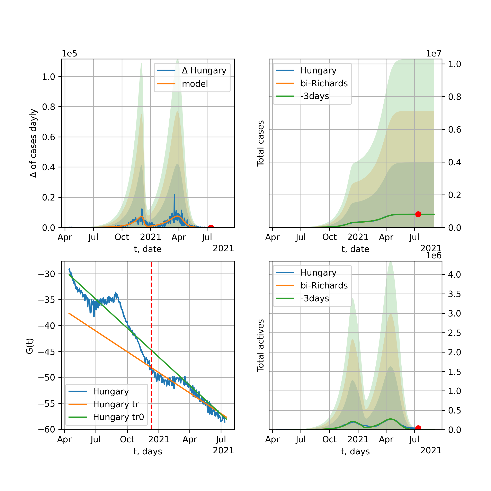

Multi-logistic model of COVID-19 dynamics
Model, code, results
Project maintained by algmaknick Hosted on GitHub Pages — Theme by mattgraham
World

World data at: 2020-11-26
+3 day model MAPE: 0.000088
model: bi-Richards
coeffs: [2.00533284e+07 1.75760902e+00 1.51935968e+02 2.38962815e-02]
rational stdev: 0.175271
forecast at the end of period: +657 days
deltaDaycases: 2650
total cases: 120304969 ± 21085986
total death: 2820891 ± 1483262
bi-Richards approximation splitting point: 200
actives k: 31
trend coefficient of determination: 0.812421
intercept: -3.170053
slope: -0.011126
trend coefficient of determination: 0.099519
intercept: -5.681063
slope: 0.002876
European Union

European Union data at: 2020-11-26
+3 day model MAPE: 0.015931
model: bi-Richards
coeffs: [1.01785751e+07 4.19606702e-02 2.54962624e+02 3.47297250e+00]
rational stdev: 0.237924
forecast at the end of period: +100 days
deltaDaycases: 1
total cases: 11649621 ± 2771724
total death: 267132 ± 190671
bi-Richards approximation splitting point: 200
actives k: 26
trend coefficient of determination: 0.536676
intercept: -43.311476
slope: -0.079721
trend coefficient of determination: 0.937104
intercept: -38.314472
slope: -0.081206
Brazil

Brazil data at: 2020-11-26
+3 day model MAPE: 0.007258
model: bi-Richards
coeffs: [5.18485597e+05 2.61034989e-01 2.55608238e+02 4.57287574e-01]
rational stdev: 0.268871
forecast at the end of period: +247 days
deltaDaycases: 153
total cases: 7074069 ± 1902010
total death: 195530 ± 157716
bi-Richards approximation splitting point: 220
actives k: 17
trend coefficient of determination: 0.846839
intercept: -4.922383
slope: -0.038094
trend coefficient of determination: 0.005618
intercept: -13.225785
slope: 0.002367
Russia

Russia data at: 2020-11-26
+3 day model MAPE: 0.002749
model: bi-Richards
coeffs: [3.21099691e+06 7.64866278e-01 4.60553087e+01 2.55562155e-02]
rational stdev: 0.176510
forecast at the end of period: +317 days
deltaDaycases: 144
total cases: 4337398 ± 765594
total death: 75452 ± 39954
bi-Richards approximation splitting point: 200
actives k: 26
trend coefficient of determination: 0.731090
intercept: -3.000738
slope: -0.015824
trend coefficient of determination: 0.027565
intercept: -5.149226
slope: 0.001401
USA

USA data at: 2020-11-26
+3 day model MAPE: 0.003175
model: bi-Richards
coeffs: [7.66892747e+06 1.61441110e+00 1.78254590e+02 3.01723429e-02]
rational stdev: 0.256726
forecast at the end of period: +660 days
deltaDaycases: 239
total cases: 24188431 ± 6209802
total death: 492133 ± 379030
bi-Richards approximation splitting point: 150
actives k: 52
trend coefficient of determination: 0.647225
intercept: -2.600244
slope: -0.019231
trend coefficient of determination: 0.296855
intercept: -6.487981
slope: 0.005801
Spain

Spain data at: 2020-11-26
+3 day model MAPE: 0.009241
model: bi-Richards
coeffs: [2.38001242e+06 1.35731167e+00 1.56466729e+01 1.38562390e-02]
rational stdev: 0.260057
forecast at the end of period: +457 days
deltaDaycases: 5
total cases: 2806999 ± 729980
total death: 76049 ± 59331
bi-Richards approximation splitting point: 200
actives k: 35
trend coefficient of determination: 0.156800
intercept: -3.930420
slope: -0.011118
trend coefficient of determination: 0.114419
intercept: -2.534639
slope: -0.008965
Italy

Italy data at: 2020-11-26
+3 day model MAPE: 0.014198
model: bi-Richards
coeffs: [1.39414352e+06 6.64907758e-02 2.60650783e+02 2.25158632e+00]
rational stdev: 0.158293
forecast at the end of period: +72 days
deltaDaycases: 0
total cases: 1643958 ± 260226
total death: 57543 ± 27325
bi-Richards approximation splitting point: 200
actives k: 28
trend coefficient of determination: 0.564002
intercept: -25.537886
slope: -0.061654
trend coefficient of determination: 0.382653
intercept: -27.659946
slope: -0.025777
United Kingdom

United Kingdom data at: 2020-11-26
+3 day model MAPE: 0.005746
model: bi-Richards
coeffs: [1.78036939e+06 9.72834321e-02 2.14531201e+02 4.58357841e-01]
rational stdev: 0.204336
forecast at the end of period: +177 days
deltaDaycases: 11
total cases: 2103534 ± 429827
total death: 76190 ± 46705
bi-Richards approximation splitting point: 200
actives k: 35
trend coefficient of determination: 0.626809
intercept: -7.199548
slope: -0.028083
trend coefficient of determination: 0.549870
intercept: -5.966338
slope: -0.018312
France

France data at: 2020-11-26
+3 day model MAPE: 0.009880
model: bi-Richards
coeffs: [2.03151735e+06 3.56007864e-02 2.51122879e+02 6.83893203e+00]
rational stdev: 0.096375
forecast at the end of period: +142 days
deltaDaycases: 0
total cases: 2174058 ± 209525
total death: 50732 ± 14667
bi-Richards approximation splitting point: 95
actives k: 105
trend coefficient of determination: 0.758900
intercept: -54.053758
slope: -0.467140
trend coefficient of determination: 0.845542
intercept: -74.243808
slope: -0.100682
Germany

Germany data at: 2020-11-26
+3 day model MAPE: 0.023663
model: bi-Richards
coeffs: [8.67599684e+05 5.17458296e-02 2.50088758e+02 2.82810933e+00]
rational stdev: 0.204757
forecast at the end of period: +51 days
deltaDaycases: 12
total cases: 1092506 ± 223698
total death: 17134 ± 10524
bi-Richards approximation splitting point: 210
actives k: 17
trend coefficient of determination: 0.453276
intercept: -33.837454
slope: -0.045268
trend coefficient of determination: 0.815742
intercept: -27.371959
slope: -0.058313
Turkey

Turkey data at: 2020-11-26
+3 day model MAPE: 0.032381
model: bi-Richards
coeffs: [ 6.81143733e+05 1.55628389e+00 -9.77617949e+01 8.26267288e-03]
rational stdev: 0.277366
forecast at the end of period: +303 days
deltaDaycases: 231
total cases: 940290 ± 260805
total death: 24292 ± 20213
bi-Richards approximation splitting point: 190
actives k: 17
trend coefficient of determination: 0.645894
intercept: -2.487452
slope: -0.020688
trend coefficient of determination: 0.493024
intercept: -8.408760
slope: 0.014420
Iran

Iran data at: 2020-11-26
+3 day model MAPE: 0.002936
model: bi-Richards
coeffs: [6.11283031e+06 1.55004092e-01 1.91263958e+02 9.58184139e-02]
rational stdev: 0.258220
forecast at the end of period: +401 days
deltaDaycases: 741
total cases: 6670273 ± 1722398
total death: 342852 ± 265593
bi-Richards approximation splitting point: 200
actives k: 17
trend coefficient of determination: 0.756189
intercept: -3.007308
slope: -0.020228
trend coefficient of determination: 0.784468
intercept: -8.982865
slope: 0.012886
Canada

Canada data at: 2020-11-26
+3 day model MAPE: 0.004741
model: bi-Richards
coeffs: [1.75908256e+06 4.04259833e-01 1.96429586e+01 2.86805203e-02]
rational stdev: 0.244680
forecast at the end of period: +443 days
deltaDaycases: 249
total cases: 1859168 ± 454900
total death: 62125 ± 45602
bi-Richards approximation splitting point: 200
actives k: 17
trend coefficient of determination: 0.775273
intercept: -2.328340
slope: -0.024035
trend coefficient of determination: 0.411701
intercept: -6.877290
slope: 0.009146
South Africa

South Africa data at: 2020-11-26
+3 day model MAPE: 0.004723
model: bi-Richards
coeffs: [1.85966239e+05 2.11788746e+00 6.83947617e+01 1.28732724e-02]
rational stdev: 0.291369
forecast at the end of period: +177 days
deltaDaycases: 18
total cases: 835803 ± 243527
total death: 22853 ± 19975
bi-Richards approximation splitting point: 200
actives k: 17
trend coefficient of determination: 0.706205
intercept: -1.721238
slope: -0.019712
trend coefficient of determination: 0.143579
intercept: -7.655142
slope: 0.006139
Belgium

Belgium data at: 2020-11-26
+3 day model MAPE: 0.010532
model: bi-Richards
coeffs: [4.88174308e+05 6.34605001e-02 2.35027123e+02 3.46866428e+00]
rational stdev: 0.178229
forecast at the end of period: +72 days
deltaDaycases: 0
total cases: 554124 ± 98760
total death: 15835 ± 8466
bi-Richards approximation splitting point: 170
actives k: 61
trend coefficient of determination: 0.565540
intercept: -32.751050
slope: -0.094766
trend coefficient of determination: 0.783177
intercept: -28.600152
slope: -0.082737
Peru

Peru data at: 2020-11-26
+3 day model MAPE: 0.002229
model: bi-Richards
coeffs: [5.98711646e+05 3.74669600e+00 1.46818404e+01 8.67927248e-03]
rational stdev: 0.247905
forecast at the end of period: +37 days
deltaDaycases: 265
total cases: 959120 ± 237770
total death: 35888 ± 26690
bi-Richards approximation splitting point: 110
actives k: 21
trend coefficient of determination: 0.799804
intercept: -1.447982
slope: -0.026615
trend coefficient of determination: 0.788796
intercept: -2.329523
slope: -0.015219
Netherlands

Netherlands data at: 2020-11-26
+3 day model MAPE: 0.017551
model: bi-Richards
coeffs: [4.61477998e+05 5.20311731e-02 2.32872987e+02 2.03288641e+00]
rational stdev: 0.085493
forecast at the end of period: +37 days
deltaDaycases: 48
total cases: 511283 ± 43711
total death: 9332 ± 2393
bi-Richards approximation splitting point: 150
actives k: 35
trend coefficient of determination: 0.662825
intercept: -20.141793
slope: -0.073274
trend coefficient of determination: 0.782388
intercept: -20.276023
slope: -0.039164
India

India data at: 2020-11-26
+3 day model MAPE: 0.002596
model: bi-Richards
coeffs: [6.42701502e+06 1.11580750e-01 1.38918162e+02 2.76719601e-01]
rational stdev: 0.220760
forecast at the end of period: +317 days
deltaDaycases: 109
total cases: 10622224 ± 2344964
total death: 154888 ± 102579
bi-Richards approximation splitting point: 92
actives k: 13
trend coefficient of determination: 0.885527
intercept: -3.284675
slope: -0.041324
trend coefficient of determination: 0.972336
intercept: -4.690454
slope: -0.019952
Switzerland

Switzerland data at: 2020-11-26
+3 day model MAPE: 0.023369
model: bi-Richards
coeffs: [2.80292863e+05 7.21756186e-02 2.41509132e+02 2.19019554e+00]
rational stdev: 0.194090
forecast at the end of period: +37 days
deltaDaycases: 5
total cases: 316504 ± 61430
total death: 4545 ± 2646
bi-Richards approximation splitting point: 205
actives k: 17
trend coefficient of determination: 0.325028
intercept: -24.203761
slope: -0.032044
trend coefficient of determination: 0.769091
intercept: -12.103852
slope: -0.074202
Ecuador

Ecuador data at: 2020-11-26
+3 day model MAPE: 0.000923
model: bi-Richards
coeffs: [ 1.70783324e+05 1.52987759e+00 -9.87518680e+01 1.07684177e-02]
rational stdev: 0.079832
forecast at the end of period: +177 days
deltaDaycases: 50
total cases: 232631 ± 18571
total death: 16465 ± 3943
bi-Richards approximation splitting point: 80
actives k: 26
trend coefficient of determination: 0.274041
intercept: -2.227169
slope: -0.047354
trend coefficient of determination: 0.041674
intercept: -4.396613
slope: -0.004365
Portugal

Portugal data at: 2020-11-26
+3 day model MAPE: 0.021787
model: bi-Richards
coeffs: [2.96883321e+05 6.06188177e-02 2.46198244e+02 1.53911743e+00]
rational stdev: 0.219892
forecast at the end of period: +72 days
deltaDaycases: 28
total cases: 364246 ± 80094
total death: 5467 ± 3606
bi-Richards approximation splitting point: 200
actives k: 21
trend coefficient of determination: 0.592923
intercept: -16.398846
slope: -0.038211
trend coefficient of determination: 0.528618
intercept: -16.654046
slope: -0.023621
Saudi Arabia

Saudi Arabia data at: 2020-11-26
+3 day model MAPE: 0.000069
model: bi-Richards
coeffs: [3.22404547e+04 2.17699962e+00 4.49998601e+01 1.15712834e-02]
rational stdev: 0.225206
forecast at the end of period: +37 days
deltaDaycases: 145
total cases: 364168 ± 82012
total death: 5967 ± 4031
bi-Richards approximation splitting point: 200
actives k: 17
trend coefficient of determination: 0.970994
intercept: -1.788097
slope: -0.024540
trend coefficient of determination: 0.449011
intercept: -5.073903
slope: -0.008377
Sweden

Sweden data at: 2020-11-26
+3 day model MAPE: 0.024925
model: bi-Richards
coeffs: [1.82159725e+05 6.54220571e-02 2.63909031e+02 2.25270438e+00]
rational stdev: 0.260389
forecast at the end of period: +72 days
deltaDaycases: 0
total cases: 269972 ± 70298
total death: 7563 ± 5907
bi-Richards approximation splitting point: 200
actives k: 35
trend coefficient of determination: 0.756423
intercept: -17.261129
slope: -0.091604
trend coefficient of determination: 0.036404
intercept: -31.851654
slope: 0.003724
Pakistan

Pakistan data at: 2020-11-26
+3 day model MAPE: 0.008514
model: bi-Richards
coeffs: [ 1.47896558e+06 9.97877023e-01 -5.79094024e+01 1.07324167e-02]
rational stdev: 0.274978
forecast at the end of period: +653 days
deltaDaycases: 42
total cases: 1777693 ± 488826
total death: 36059 ± 29746
bi-Richards approximation splitting point: 220
actives k: 26
trend coefficient of determination: 0.852521
intercept: -1.598195
slope: -0.024599
trend coefficient of determination: 0.919456
intercept: -14.443346
slope: 0.035053
Ireland

Ireland data at: 2020-11-26
+3 day model MAPE: 0.008559
model: bi-Richards
coeffs: [4.47826848e+04 5.18171464e-02 2.27127379e+02 2.20152542e+00]
rational stdev: 0.614897
forecast at the end of period: +37 days
deltaDaycases: 1
total cases: 70949 ± 43626
total death: 2020 ± 3726
bi-Richards approximation splitting point: 170
actives k: 35
trend coefficient of determination: 0.620391
intercept: -18.831636
slope: -0.084838
trend coefficient of determination: 0.479758
intercept: -23.279855
slope: -0.023514
Mexico

Mexico data at: 2020-11-26
+3 day model MAPE: 0.009650
model: bi-Richards
coeffs: [3.12869000e+05 1.84384733e+00 1.03138158e+02 1.68218832e-02]
rational stdev: 0.251918
forecast at the end of period: +107 days
deltaDaycases: 400
total cases: 1256217 ± 316464
total death: 121408 ± 91754
bi-Richards approximation splitting point: 200
actives k: 17
trend coefficient of determination: 0.945669
intercept: -1.762286
slope: -0.018829
trend coefficient of determination: 0.030768
intercept: -4.533506
slope: -0.003490
Singapore

Singapore data at: 2020-11-26
+3 day model MAPE: 0.000513
model: bi-Richards
coeffs: [3.97317734e+04 1.41694926e-01 6.88438665e+01 2.03592864e-01]
rational stdev: 0.349796
forecast at the end of period: +37 days
deltaDaycases: 2
total cases: 58876 ± 20594
total death: 28 ± 29
bi-Richards approximation splitting point: 80
actives k: 26
trend coefficient of determination: 0.159279
intercept: -3.149389
slope: -0.018098
trend coefficient of determination: 0.864929
intercept: -1.985874
slope: -0.033390
Chile

Chile data at: 2020-11-26
+3 day model MAPE: 0.002416
model: bi-Richards
coeffs: [1.85850366e+05 3.20925901e+00 8.39412688e+00 7.84197778e-03]
S.Korea scenario coeffs: [0.36242246, 2.56241634, 1.84890887, 0.13324732]
rational stdev: 0.667346
forecast at the end of period: +107 days
deltaDaycases: 71
total cases: 575671 ± 384171
total death: 16072 ± 32176
bi-Richards approximation splitting point: 170
actives k: 10
trend coefficient of determination: 0.912360
intercept: -1.409012
slope: -0.025227
trend coefficient of determination: 0.532788
intercept: -4.264038
slope: -0.007171
Israel

Israel data at: 2020-11-26
+3 day model MAPE: 0.001276
model: bi-Richards
coeffs: [8.43957584e+04 2.63087096e-01 1.86470575e+02 7.20146956e-01]
rational stdev: 0.361581
forecast at the end of period: +16 days
deltaDaycases: 76
total cases: 329289 ± 119064
total death: 2798 ± 3035
bi-Richards approximation splitting point: 186
actives k: 11
trend coefficient of determination: 0.291143
intercept: -9.657255
slope: -0.018940
trend coefficient of determination: 0.727694
intercept: -2.991146
slope: -0.051095
Austria

Austria data at: 2020-11-26
+3 day model MAPE: 0.019115
model: bi-Richards
coeffs: [2.25580804e+05 6.95774050e-02 2.46460786e+02 2.81887798e+00]
rational stdev: 0.250928
forecast at the end of period: +597 days
deltaDaycases: 3
total cases: 1004609 ± 252084
total death: 10471 ± 7882
bi-Richards approximation splitting point: 210
actives k: 13
trend coefficient of determination: 0.364165
intercept: -28.420448
slope: -0.035552
trend coefficient of determination: 0.884269
intercept: -13.989169
slope: -0.094929
Belarus

Belarus data at: 2020-11-26
+3 day model MAPE: 0.004247
model: bi-Richards
coeffs: [3.15712105e+05 5.67553028e-01 2.65371567e+01 2.63646518e-02]
rational stdev: 0.094587
forecast at the end of period: +387 days
deltaDaycases: 25
total cases: 386464 ± 36554
total death: 3353 ± 951
bi-Richards approximation splitting point: 200
actives k: 21
trend coefficient of determination: 0.690619
intercept: -2.829207
slope: -0.021854
trend coefficient of determination: 0.780121
intercept: -7.395974
slope: 0.011263
Japan

Japan data at: 2020-11-26
+3 day model MAPE: 0.022687
model: bi-Richards
coeffs: [ 5.70625932e+04 1.23644273e+01 -8.54517210e+01 2.60340874e-03]
rational stdev: 0.079401
forecast at the end of period: +429 days
deltaDaycases: 0
total cases: 380095 ± 30179
total death: 5599 ± 1333
bi-Richards approximation splitting point: 190
actives k: 11
trend coefficient of determination: 0.046841
intercept: -5.234709
slope: 0.003265
trend coefficient of determination: 0.234787
intercept: -8.600709
slope: 0.021306
China

China data at: 2020-11-26
+3 day model MAPE: 0.000253
model: bi-Richards
coeffs: [ 5.41197943e+03 2.80143613e+00 -2.91991935e+02 4.30469537e-03]
rational stdev: 0.070082
forecast at the end of period: +37 days
deltaDaycases: 6
total cases: 86590 ± 6068
total death: 4639 ± 975
bi-Richards approximation splitting point: 110
actives k: 17
trend coefficient of determination: 0.820995
intercept: -1.996442
slope: -0.082708
trend coefficient of determination: 0.123941
intercept: -10.237239
slope: 0.006345
Qatar

Qatar data at: 2020-11-26
+3 day model MAPE: 0.001156
model: bi-Richards
coeffs: [ 3.34921698e+04 1.68922561e+00 -4.91074188e+01 1.15916226e-02]
S.Korea scenario coeffs: [0.36242246, 2.56241634, 1.84890887, 0.13324732]
rational stdev: 0.081839
forecast at the end of period: +37 days
deltaDaycases: 87
total cases: 141778 ± 11602
total death: 243 ± 59
bi-Richards approximation splitting point: 144
actives k: 17
trend coefficient of determination: 0.918645
intercept: -1.949734
slope: -0.030891
trend coefficient of determination: 0.200628
intercept: -5.783296
slope: -0.003673
Poland

Poland data at: 2020-11-26
+3 day model MAPE: 0.023466
model: bi-Richards
coeffs: [1.09180762e+06 9.50962519e-02 2.41633482e+02 8.74908237e-01]
rational stdev: 0.277061
forecast at the end of period: +107 days
deltaDaycases: 33
total cases: 1173672 ± 325178
total death: 19415 ± 16137
bi-Richards approximation splitting point: 170
actives k: 21
trend coefficient of determination: 0.720957
intercept: -7.681175
slope: -0.048945
trend coefficient of determination: 0.106610
intercept: -12.648231
slope: -0.008068
UAE

UAE data at: 2020-11-26
+3 day model MAPE: 0.004428
model: bi-Richards
coeffs: [1.39545745e+05 3.87692407e-02 2.04523678e+02 9.52130399e-01]
rational stdev: 0.106261
forecast at the end of period: +177 days
deltaDaycases: 2
total cases: 196439 ± 20873
total death: 675 ± 215
bi-Richards approximation splitting point: 128
actives k: 11
trend coefficient of determination: 0.904944
intercept: -9.604228
slope: -0.057147
trend coefficient of determination: 0.037067
intercept: -15.324185
slope: -0.002541
Romania

Romania data at: 2020-11-25
+3 day model MAPE: 0.016043
model: bi-Richards
coeffs: [2.21927162e+06 1.81207311e-01 1.55404491e+02 9.21222625e-02]
rational stdev: 0.312594
forecast at the end of period: +450 days
deltaDaycases: 40
total cases: 2307906 ± 721437
total death: 55018 ± 51594
bi-Richards approximation splitting point: 190
actives k: 17
trend coefficient of determination: 0.511430
intercept: -3.177475
slope: -0.014822
trend coefficient of determination: 0.268778
intercept: -7.089751
slope: 0.008622
Panama

Panama data at: 2020-11-26
+3 day model MAPE: 0.007009
model: bi-Richards
coeffs: [1.59939024e+05 1.67374553e+00 4.88340275e+01 1.17643403e-02]
rational stdev: 0.248020
forecast at the end of period: +289 days
deltaDaycases: 16
total cases: 285469 ± 70802
total death: 5375 ± 3999
bi-Richards approximation splitting point: 210
actives k: 26
trend coefficient of determination: 0.758429
intercept: -2.286847
slope: -0.015435
trend coefficient of determination: 0.304413
intercept: -7.574372
slope: 0.009875
Ukraine

Ukraine data at: 2020-11-26
+3 day model MAPE: 0.000973
model: bi-Richards
coeffs: [5.38590435e+06 1.43729497e-01 1.44207505e+02 9.00054641e-02]
rational stdev: 0.283453
forecast at the end of period: +667 days
deltaDaycases: 145
total cases: 6337470 ± 1796377
total death: 108843 ± 92555
bi-Richards approximation splitting point: 175
actives k: 35
trend coefficient of determination: 0.638962
intercept: -2.884284
slope: -0.017241
trend coefficient of determination: 0.056675
intercept: -5.337283
slope: 0.001282
Indonesia

Indonesia data at: 2020-11-26
+3 day model MAPE: 0.000167
model: bi-Richards
coeffs: [9.16619410e+05 1.11748567e-01 4.84354082e+01 1.13668732e-01]
rational stdev: 0.120294
forecast at the end of period: +485 days
deltaDaycases: 17
total cases: 962395 ± 115770
total death: 30453 ± 10989
bi-Richards approximation splitting point: 75
actives k: 17
trend coefficient of determination: 0.832138
intercept: -2.598502
slope: -0.034741
trend coefficient of determination: 0.589797
intercept: -4.117833
slope: -0.008887
Bangladesh

Bangladesh data at: 2020-11-26
+3 day model MAPE: 0.004032
model: bi-Richards
coeffs: [1.93383563e+05 2.17589977e+00 6.40140755e+01 1.03208106e-02]
rational stdev: 0.192539
forecast at the end of period: +415 days
deltaDaycases: 0
total cases: 613871 ± 118194
total death: 8774 ± 5068
bi-Richards approximation splitting point: 220
actives k: 35
trend coefficient of determination: 0.485895
intercept: -2.265740
slope: -0.015883
trend coefficient of determination: 0.079027
intercept: -7.142608
slope: 0.006105
South_Korea

South Korea data at: 2020-11-26
+3 day model MAPE: 0.026337
model: bi-Richards
coeffs: [2.33782592e+04 4.30780224e-01 2.16355269e+01 4.19331341e-02]
rational stdev: 0.166308
forecast at the end of period: +37 days
deltaDaycases: 45
total cases: 32176 ± 5351
total death: 504 ± 251
bi-Richards approximation splitting point: 140
actives k: 26
trend coefficient of determination: 0.402471
intercept: -3.630712
slope: -0.027516
trend coefficient of determination: 0.027847
intercept: -6.304655
slope: 0.002705
Moldova

Moldova data at: 2020-11-26
+3 day model MAPE: 0.012336
model: bi-Richards
coeffs: [ 1.51128552e+05 9.95205512e-01 -2.66636759e+01 1.43985014e-02]
rational stdev: 0.268106
forecast at the end of period: +457 days
deltaDaycases: 4
total cases: 221589 ± 59409
total death: 4800 ± 3860
bi-Richards approximation splitting point: 170
actives k: 17
trend coefficient of determination: 0.665121
intercept: -2.223250
slope: -0.017262
trend coefficient of determination: 0.006940
intercept: -4.393321
slope: -0.001339
Denmark

Denmark data at: 2020-11-26
+3 day model MAPE: 0.002387
model: bi-Richards
coeffs: [2.52552705e+05 8.68328166e-01 8.58434886e+00 1.68035017e-02]
rational stdev: 0.236304
forecast at the end of period: +457 days
deltaDaycases: 7
total cases: 269879 ± 63773
total death: 2903 ± 2057
bi-Richards approximation splitting point: 206
actives k: 17
trend coefficient of determination: 0.228178
intercept: -3.401214
slope: -0.014467
trend coefficient of determination: 0.076373
intercept: -5.179669
slope: 0.003871
Serbia

Serbia data at: 2020-11-26
+3 day model MAPE: 0.005013
model: bi-Richards
coeffs: [1.70401045e+06 4.25251166e-01 1.75707992e+02 6.03883315e-02]
rational stdev: 0.257062
forecast at the end of period: +387 days
deltaDaycases: 6
total cases: 1737615 ± 446674
total death: 16014 ± 12349
bi-Richards approximation splitting point: 220
actives k: 35
trend coefficient of determination: 0.513217
intercept: -3.568634
slope: -0.014845
trend coefficient of determination: 0.347731
intercept: -8.191595
slope: 0.018271
Kuwait

Kuwait data at: 2020-11-26
+3 day model MAPE: 0.003705
model: bi-Richards
coeffs: [ 1.53538498e+05 1.58757791e+00 -2.10972437e+02 8.25876704e-03]
rational stdev: 0.177603
forecast at the end of period: +86 days
deltaDaycases: 167
total cases: 162681 ± 28892
total death: 1002 ± 533
bi-Richards approximation splitting point: 90
actives k: 17
trend coefficient of determination: 0.165193
intercept: -2.528516
slope: -0.009662
trend coefficient of determination: 0.730023
intercept: -3.514669
slope: -0.008370
Philippines

Philippines data at: 2020-11-26
+3 day model MAPE: 0.003574
model: bi-Richards
coeffs: [4.43720183e+05 5.64902521e-02 1.37803910e+02 5.08276252e-01]
rational stdev: 0.230932
forecast at the end of period: +163 days
deltaDaycases: 8
total cases: 447823 ± 103416
total death: 8699 ± 6026
bi-Richards approximation splitting point: 36
actives k: 26
trend coefficient of determination: 0.795426
intercept: -3.225926
slope: -0.139676
trend coefficient of determination: 0.905903
intercept: -7.022463
slope: -0.020204
Norway

Norway data at: 2020-11-26
+3 day model MAPE: 0.020120
model: bi-Richards
coeffs: [1.57677280e+05 4.32610722e-01 1.13353283e+02 3.87439952e-02]
rational stdev: 0.273043
forecast at the end of period: +513 days
deltaDaycases: 0
total cases: 170643 ± 46592
total death: 1551 ± 1270
bi-Richards approximation splitting point: 230
actives k: 35
trend coefficient of determination: 0.218067
intercept: -4.011070
slope: -0.012387
trend coefficient of determination: 0.154771
intercept: -7.768304
slope: 0.012987
Czechia

Czechia data at: 2020-11-26
+3 day model MAPE: 0.012270
model: bi-Richards
coeffs: [4.93727712e+05 6.60717626e-02 2.39049190e+02 1.95709122e+00]
rational stdev: 0.279858
forecast at the end of period: +37 days
deltaDaycases: 24
total cases: 513569 ± 143726
total death: 7810 ± 6557
bi-Richards approximation splitting point: 160
actives k: 17
trend coefficient of determination: 0.566200
intercept: -15.055104
slope: -0.071683
trend coefficient of determination: 0.878616
intercept: -10.916767
slope: -0.070825
Colombia

Colombia data at: 2020-11-26
+3 day model MAPE: 0.001577
model: bi-Richards
coeffs: [6.65065097e+05 2.01960027e+00 1.08844304e+02 1.70390417e-02]
rational stdev: 0.253741
forecast at the end of period: +177 days
deltaDaycases: 21
total cases: 1499179 ± 380403
total death: 42170 ± 32100
bi-Richards approximation splitting point: 170
actives k: 11
trend coefficient of determination: 0.641190
intercept: -2.212694
slope: -0.011827
trend coefficient of determination: 0.560619
intercept: -3.436259
slope: -0.007366
Australia

Australia data at: 2020-11-26
+3 day model MAPE: 0.000750
model: bi-Richards
coeffs: [2.05286712e+04 1.16551515e-01 1.22274332e+02 6.81996793e-01]
rational stdev: 0.050493
forecast at the end of period: +23 days
deltaDaycases: 0
total cases: 27462 ± 1386
total death: 893 ± 135
bi-Richards approximation splitting point: 104
actives k: 26
trend coefficient of determination: 0.543878
intercept: -8.720563
slope: -0.048854
trend coefficient of determination: 0.878831
intercept: -5.327195
slope: -0.041925
Malaysia

Malaysia data at: 2020-11-26
+3 day model MAPE: 0.030326
model: bi-Richards
coeffs: [9.94248204e+04 5.10425760e-01 1.61059174e+02 6.01006922e-02]
rational stdev: 0.219129
forecast at the end of period: +107 days
deltaDaycases: 77
total cases: 105809 ± 23185
total death: 606 ± 398
bi-Richards approximation splitting point: 170
actives k: 15
trend coefficient of determination: 0.671266
intercept: -2.646430
slope: -0.034595
trend coefficient of determination: 0.529133
intercept: -14.567826
slope: 0.041575
Dominican Republic

Dominican Republic data at: 2020-11-26
+3 day model MAPE: 0.006802
model: bi-Richards
coeffs: [4.62812893e+04 3.31119471e+00 4.17361546e+01 8.75524718e-03]
rational stdev: 0.195278
forecast at the end of period: +107 days
deltaDaycases: 21
total cases: 151386 ± 29562
total death: 2489 ± 1458
bi-Richards approximation splitting point: 200
actives k: 35
trend coefficient of determination: 0.784377
intercept: -2.554908
slope: -0.015343
trend coefficient of determination: 0.017394
intercept: -6.672215
slope: 0.004052
Egypt

Egypt data at: 2020-11-26
+3 day model MAPE: 0.004422
model: bi-Richards
coeffs: [ 4.47311006e+04 8.11307274e-01 -6.07088123e+01 1.62048487e-02]
rational stdev: 0.143090
forecast at the end of period: +177 days
deltaDaycases: 56
total cases: 138305 ± 19790
total death: 7969 ± 3420
bi-Richards approximation splitting point: 140
actives k: 43
trend coefficient of determination: 0.802570
intercept: -2.080453
slope: -0.021679
trend coefficient of determination: 0.199289
intercept: -7.438533
slope: 0.004050
Finland

Finland data at: 2020-11-26
+3 day model MAPE: 0.020198
model: bi-Richards
coeffs: [3.00516699e+04 1.32900251e+00 5.68607466e+01 1.65575409e-02]
rational stdev: 0.133710
forecast at the end of period: +198 days
deltaDaycases: 6
total cases: 37633 ± 5031
total death: 630 ± 252
bi-Richards approximation splitting point: 210
actives k: 26
trend coefficient of determination: 0.379810
intercept: -3.241180
slope: -0.020336
trend coefficient of determination: 0.009647
intercept: -3.691403
slope: -0.003446
Morocco

Morocco data at: 2020-11-26
+3 day model MAPE: 0.001413
model: bi-Richards
coeffs: [ 2.10580704e+05 8.04435421e-01 -4.87127909e+01 1.82111075e-02]
rational stdev: 0.277180
forecast at the end of period: +177 days
deltaDaycases: 156
total cases: 478712 ± 132689
total death: 7895 ± 6565
bi-Richards approximation splitting point: 150
actives k: 11
trend coefficient of determination: 0.302703
intercept: -2.771711
slope: -0.013525
trend coefficient of determination: 0.445751
intercept: -2.764471
slope: -0.006749
Uzbekistan

Uzbekistan data at: 2020-11-26
+3 day model MAPE: 0.003646
model: bi-Richards
coeffs: [1.27640749e+04 1.13229145e+01 8.69168533e+01 4.09034413e-03]
rational stdev: 0.436409
forecast at the end of period: +65 days
deltaDaycases: 5
total cases: 73885 ± 32244
total death: 619 ± 810
bi-Richards approximation splitting point: 200
actives k: 11
trend coefficient of determination: 0.458534
intercept: -2.608124
slope: -0.010987
trend coefficient of determination: 0.457913
intercept: -1.606027
slope: -0.017672
Argentina

Argentina data at: 2020-11-26
+3 day model MAPE: 0.003925
model: bi-Richards
coeffs: [1.54561748e+06 2.72967888e-01 9.99578799e+01 8.78598137e-02]
rational stdev: 0.200873
forecast at the end of period: +247 days
deltaDaycases: 30
total cases: 1809365 ± 363452
total death: 49055 ± 29561
bi-Richards approximation splitting point: 140
actives k: 16
trend coefficient of determination: 0.045019
intercept: -3.539599
slope: -0.006673
trend coefficient of determination: 0.823132
intercept: -2.352542
slope: -0.015233
Algeria

Algeria data at: 2020-11-26
+3 day model MAPE: 0.036792
model: bi-Richards
coeffs: [3.15828087e+04 5.11114448e-02 2.29501576e+02 9.51148314e+00]
rational stdev: 0.114659
forecast at the end of period: +37 days
deltaDaycases: 0
total cases: 81629 ± 9359
total death: 2426 ± 834
bi-Richards approximation splitting point: 200
actives k: 35
trend coefficient of determination: 0.950321
intercept: -78.264776
slope: -0.183248
trend coefficient of determination: 0.802363
intercept: -97.182400
slope: -0.058412
Luxembourg

Luxembourg data at: 2020-11-26
+3 day model MAPE: 0.014776
model: bi-Richards
coeffs: [2.56054186e+04 1.51471306e-01 2.27765563e+02 5.54706997e-01]
rational stdev: 0.262064
forecast at the end of period: +1073 days
deltaDaycases: 2
total cases: 62273 ± 16319
total death: 556 ± 437
bi-Richards approximation splitting point: 190
actives k: 17
trend coefficient of determination: 0.243423
intercept: -7.669031
slope: -0.018921
trend coefficient of determination: 0.011842
intercept: -10.301869
slope: 0.003814
Thailand

Thailand data at: 2020-11-26
+3 day model MAPE: 0.001219
model: bi-Richards
coeffs: [ 1.98007016e+03 8.17744414e-01 -3.67321801e+02 9.78699831e-03]
rational stdev: 0.049122
forecast at the end of period: +107 days
deltaDaycases: 3
total cases: 4430 ± 217
total death: 67 ± 9
bi-Richards approximation splitting point: 60
actives k: 17
trend coefficient of determination: 0.843432
intercept: -1.262164
slope: -0.117623
trend coefficient of determination: 0.115052
intercept: -8.198620
slope: 0.006925
Hungary

Hungary data at: 2020-11-26
+3 day model MAPE: 0.005128
model: bi-Richards
coeffs: [8.19840283e+04 7.66454187e-02 2.46221971e+02 3.29400195e+00]
rational stdev: 2.323346
forecast at the end of period: +58 days
deltaDaycases: 1
total cases: 251939 ± 585341
total death: 5547 ± 38662
bi-Richards approximation splitting point: 210
actives k: 35
trend coefficient of determination: 0.585169
intercept: -22.045702
slope: -0.079187
trend coefficient of determination: 0.973483
intercept: -11.076865
slope: -0.124266
Greece

Greece data at: 2020-11-26
+3 day model MAPE: 0.005682
model: bi-Richards
coeffs: [5.98882728e+04 1.13037089e-01 2.43806388e+02 1.45339617e+00]
rational stdev: 0.457655
forecast at the end of period: +142 days
deltaDaycases: 0
total cases: 182727 ± 83626
total death: 3681 ± 5053
bi-Richards approximation splitting point: 210
actives k: 46
trend coefficient of determination: 0.423541
intercept: -13.880170
slope: -0.023085
trend coefficient of determination: 0.661348
intercept: -10.037472
slope: -0.038259
Iraq

Iraq data at: 2020-11-26
+3 day model MAPE: 0.001492
model: bi-Richards
coeffs: [ 7.40621565e+05 6.01405200e-01 -6.85953352e+01 2.52057560e-02]
rational stdev: 0.195417
forecast at the end of period: +289 days
deltaDaycases: 44
total cases: 746358 ± 145851
total death: 16614 ± 9739
bi-Richards approximation splitting point: 80
actives k: 17
trend coefficient of determination: 0.290658
intercept: -2.630314
slope: -0.017381
trend coefficient of determination: 0.940904
intercept: -1.650483
slope: -0.016154
Croatia

Croatia data at: 2020-11-26
+3 day model MAPE: 0.025752
model: bi-Richards
coeffs: [9.88387129e+04 4.84032465e+00 1.42051497e+02 1.06233749e-02]
rational stdev: 0.419398
forecast at the end of period: +107 days
deltaDaycases: 9
total cases: 204033 ± 85571
total death: 2738 ± 3444
bi-Richards approximation splitting point: 200
actives k: 11
trend coefficient of determination: 0.001681
intercept: -5.003407
slope: 0.001422
trend coefficient of determination: 0.006710
intercept: -4.271793
slope: 0.002841
Iceland

Iceland data at: 2020-11-26
+3 day model MAPE: 0.003316
model: bi-Richards
coeffs: [3.49244536e+03 4.71592334e-02 2.28848562e+02 2.98919841e+00]
rational stdev: 0.170219
forecast at the end of period: +37 days
deltaDaycases: 0
total cases: 5274 ± 897
total death: 25 ± 12
bi-Richards approximation splitting point: 170
actives k: 17
trend coefficient of determination: 0.352197
intercept: -22.463522
slope: -0.058269
trend coefficient of determination: 0.469238
intercept: -21.614059
slope: -0.035331
Estonia

Estonia data at: 2020-11-26
+3 day model MAPE: 0.068834
model: bi-Richards
coeffs: [6.75713656e+03 7.15230188e-02 2.43429815e+02 5.53349565e+00]
rational stdev: 0.187141
forecast at the end of period: +632 days
deltaDaycases: 3
total cases: 67424 ± 12617
total death: 609 ± 341
bi-Richards approximation splitting point: 215
actives k: 26
trend coefficient of determination: 0.487657
intercept: -42.812269
slope: -0.041910
trend coefficient of determination: 0.840452
intercept: -22.965778
slope: -0.125198
Bulgaria

Bulgaria data at: 2020-11-26
+3 day model MAPE: 0.013982
model: bi-Richards
coeffs: [1.74464721e+05 1.93313095e-01 2.16974578e+02 3.18721711e-01]
rational stdev: 0.202600
forecast at the end of period: +107 days
deltaDaycases: 7
total cases: 196803 ± 39872
total death: 5083 ± 3089
bi-Richards approximation splitting point: 210
actives k: 35
trend coefficient of determination: 0.634631
intercept: -4.840910
slope: -0.017405
trend coefficient of determination: 0.165956
intercept: -2.844007
slope: -0.017574
New Zealand

New Zealand data at: 2020-11-26
+3 day model MAPE: 0.003077
model: bi-Richards
coeffs: [6.17320469e+02 1.51210885e-01 7.23813961e+01 1.47607180e-01]
rational stdev: 0.015617
forecast at the end of period: +58 days
deltaDaycases: 0
total cases: 2085 ± 32
total death: 25 ± 1
bi-Richards approximation splitting point: 100
actives k: 17
trend coefficient of determination: 0.539581
intercept: -4.159226
slope: -0.082073
trend coefficient of determination: 0.035622
intercept: -8.791708
slope: 0.005075
Slovenia

Slovenia data at: 2020-11-26
+3 day model MAPE: 0.019577
model: bi-Richards
coeffs: [7.47069832e+04 4.12773415e+00 1.58982943e+02 1.38415914e-02]
rational stdev: 0.401827
forecast at the end of period: +212 days
deltaDaycases: 0
total cases: 136644 ± 54907
total death: 2393 ± 2884
bi-Richards approximation splitting point: 219
actives k: 17
trend coefficient of determination: 0.004281
intercept: -4.797856
slope: -0.002020
trend coefficient of determination: 0.121448
intercept: 4.406673
slope: -0.033270
Slovakia

Slovakia data at: 2020-11-26
+3 day model MAPE: 0.005875
model: bi-Richards
coeffs: [1.03532964e+05 8.56772748e-02 2.26646940e+02 1.04014314e+00]
rational stdev: 0.286216
forecast at the end of period: +37 days
deltaDaycases: 49
total cases: 108675 ± 31104
total death: 803 ± 689
bi-Richards approximation splitting point: 170
actives k: 30
trend coefficient of determination: 0.319595
intercept: -9.270595
slope: -0.032958
trend coefficient of determination: 0.743307
intercept: -3.219653
slope: -0.050008
Lithuania

Lithuania data at: 2020-11-26
+3 day model MAPE: 0.014795
model: bi-Richards
coeffs: [9.75585530e+04 1.91477138e+00 1.64468757e+02 2.38709083e-02]
rational stdev: 0.449171
forecast at the end of period: +282 days
deltaDaycases: 0
total cases: 163679 ± 73520
total death: 1367 ± 1842
bi-Richards approximation splitting point: 230
trend coefficient of determination: 0.013946
intercept: -4.395792
slope: -0.002496
trend coefficient of determination: 0.304812
intercept: 1.859885
slope: -0.021206
Latvia

Latvia data at: 2020-11-26
+3 day model MAPE: 0.015530
model: bi-Richards
coeffs: [5.73734236e+04 1.06857130e-01 2.15450521e+02 2.51910332e-01]
rational stdev: 0.103472
forecast at the end of period: +212 days
deltaDaycases: 9
total cases: 58291 ± 6031
total death: 722 ± 224
bi-Richards approximation splitting point: 175
actives k: 46
trend coefficient of determination: 0.362767
intercept: -5.280767
slope: -0.022092
trend coefficient of determination: 0.138067
intercept: -9.885630
slope: 0.018016
Cyprus

Cyprus data at: 2020-11-26
+3 day model MAPE: 0.036992
model: bi-Richards
coeffs: [1.25904640e+04 9.41443935e-02 2.31633680e+02 6.20384989e-01]
rational stdev: 0.236589
forecast at the end of period: +107 days
deltaDaycases: 0
total cases: 14075 ± 3330
total death: 69 ± 48
bi-Richards approximation splitting point: 190
actives k: 35
trend coefficient of determination: 0.345599
intercept: -7.156174
slope: -0.023217
trend coefficient of determination: 0.009946
intercept: -9.562594
slope: 0.002927
Malta

Malta data at: 2020-11-26
+3 day model MAPE: 0.010112
model: bi-Richards
coeffs: [2.62345207e+04 2.75934233e-01 5.16903620e+01 4.66483570e-02]
rational stdev: 0.282559
forecast at the end of period: +296 days
deltaDaycases: 11
total cases: 43289 ± 12231
total death: 575 ± 487
bi-Richards approximation splitting point: 170
actives k: 17
trend coefficient of determination: 0.178440
intercept: -3.638186
slope: -0.020372
trend coefficient of determination: 0.009032
intercept: -4.978968
slope: 0.002125
Sri Lanka

Sri Lanka data at: 2020-11-26
+3 day model MAPE: 0.037239
model: bi-Richards
coeffs: [2.12175414e+04 5.04624653e-02 2.35975813e+02 3.17522106e+00]
rational stdev: 0.158729
forecast at the end of period: +58 days
deltaDaycases: 0
total cases: 23287 ± 3696
total death: 104 ± 49
bi-Richards approximation splitting point: 120
actives k: 17
trend coefficient of determination: 0.857897
intercept: -18.748960
slope: -0.114488
trend coefficient of determination: 0.215948
intercept: -28.615489
slope: -0.019053
References
- Worldometers COVID-19 Coronavirus Pandemic
- Su COVID-19 susijusi gyventojų ir verslo statistika
- Bi-logistic growth
- Least squares
- scikit-learn
- scipy.org
- European Centre for Disease Prevention and Control An agency of the European Union
- Aaron Miller, Mac Josh Reandelar, Kimberly Fasciglione, Violeta Roumenova, Yan Li, Gonzalo H Otazu, Correlation between universal BCG vaccination policy and reduced morbidity and mortality for COVID-19: an epidemiological study, https://doi.org/10.1101/2020.03.24.20042937
- c19.se